FinalReport
Steven Garrity and Richard Palmer
26 October 2019
knitr::opts_chunk$set(echo = TRUE)
library(tidyverse)
library(usmap)# import raw data
beers_raw <- read.csv('Beers.csv') %>% rename(Brew_ID = Brewery_id, Beer_name = Name)
breweries_raw <- read.csv('Breweries.csv') %>% rename(Brewery_name = Name)
# join on Brewery ID and sort the result by Beer ID.
merged <- inner_join(beers_raw, breweries_raw,by='Brew_ID') %>% arrange(Beer_ID)
# shared place to create data for various maps later on.
states <- map_data("state")
states_and_dc <- tibble(state = state.name) %>%
bind_cols(tibble(abbr = state.abb)) %>%
bind_rows(tibble(state = "District of Columbia", abb = "DC"))Prepared for
Prepared for CEO and CFO of Budweiser, a subsidiary of Anheuser-Busch.
Case Study 1 project for DS6306 Section 408 Fall 2019 Dr. Bivin Sadler
Introduction
The purpose of this project is to study a dataset of 2410 beers produced by 558 breweries in the United States. We have data on the style, ABV (alcohol by volume) and IBU (international bitterness units) of each beer, and we have the city and state for each brewery. The goal is to answer some specific questions about the data and to look for relationships or inferences which may be of interest to a hypothetical sponsor, Budweiser.
Question 1: How many breweries in each state?
Map the number of breweries per state:
breweries_by_state <- breweries_raw %>% group_by(State) %>% summarize(count = n())
# library(maps)
states <- map_data("state")
# add DC to embedded "state" dataset:
states_and_dc <- tibble(state = state.name) %>%
bind_cols(tibble(abbr = state.abb)) %>%
bind_rows(tibble(state = "District of Columbia", abb = "DC"))
# found an empty white space in the state abbreviation data. Remove it first:
breweries_by_state$State <- str_trim(breweries_by_state$State, "left")
# need to match the column name.
colnames(breweries_by_state)[1] = "abbr"
# This appears to be necessary, but I'm not 100% certain why:
breweries_by_state$abbr <- as.character(breweries_by_state$abbr)
# merge three dataframes: brewery count per state, state names and abbreviations, and state population data
breweries_by_state_temp <- merge(breweries_by_state, states_and_dc, by="abbr")
breweries_by_state_tomap <- merge(breweries_by_state_temp, statepop, by="abbr")
breweries_by_state_tomap$perCapita <- breweries_by_state_tomap$count/(breweries_by_state_tomap$pop_2015/1000000)Number of breweries by state:
# library(usmap)
# library(ggthemes)
### Map the total number of breweries in each state:
plot_usmap(regions = c("states"), data = breweries_by_state_tomap,
values = "count", theme = theme_map(), labels = FALSE,
label_color = "black") +
scale_fill_continuous(name = "n", low="white", high="#c8102e") +
theme(legend.position="right") +
labs(title = 'Number of Breweries in each state')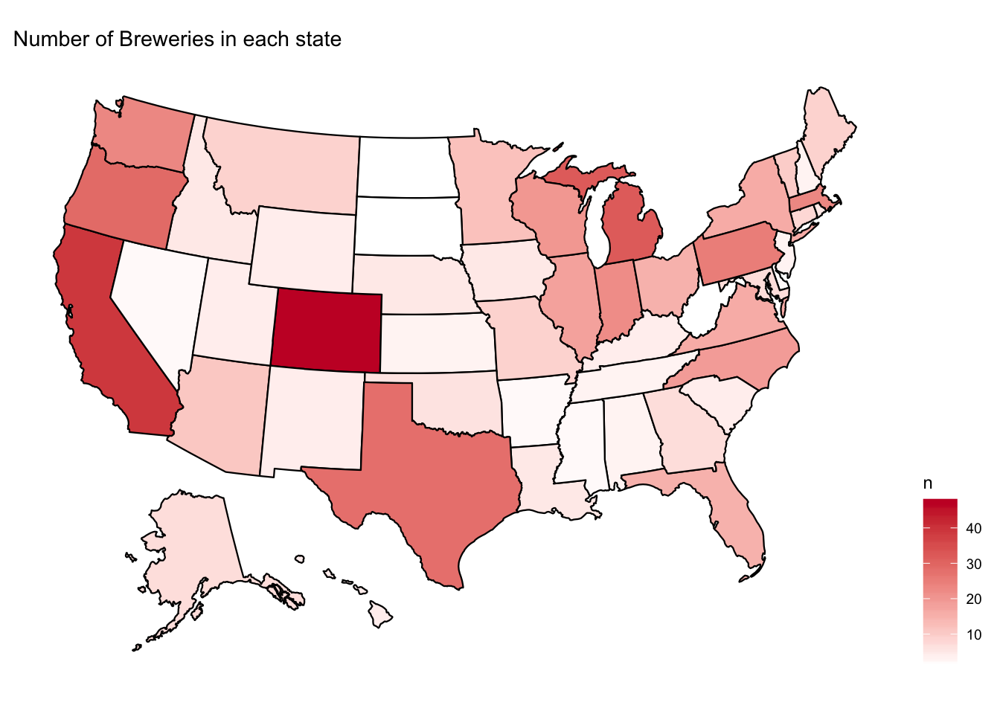
Breweries per Capita in each state:
### Map the number of breweries per capita in each state:
plot_usmap(regions = c("states"), data = breweries_by_state_tomap,
values = "perCapita", theme = theme_map(), labels = FALSE,
label_color = "black") +
scale_fill_continuous(name = "n*", low="white", high="#13294b") +
theme(legend.position="right",
plot.caption = element_text(color="navyblue", size = 8, hjust=1)) +
labs(title = 'Breweries per Capita*', caption = "*per 1M people")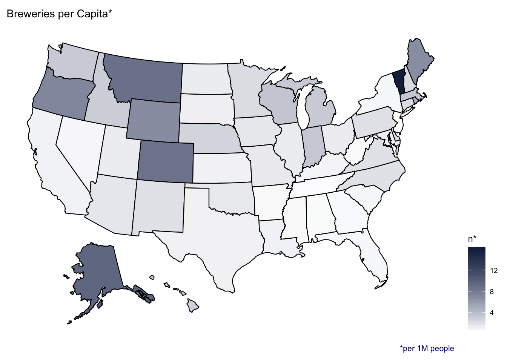
Supplemental bar charts of breweries per state and breweries per capita by state:
#bar charts
library(grid)
p1 <- breweries_by_state_tomap %>% ggplot(aes(x=reorder(abbr, -count), y=count)) +
geom_col(fill="#c8102e") +
labs(title = "Breweries per State", y="Number of Breweries", x="")
p2 <- breweries_by_state_tomap %>% ggplot(aes(x=reorder(abbr, -perCapita), y=perCapita)) +
geom_col(fill="#13294b") +
labs(title = "Breweries per Capita* by State",
y="Number of Breweries", x="", caption="*per 1M people")
grid.newpage()
grid.draw(rbind(ggplotGrob(p1), ggplotGrob(p2), size="last"))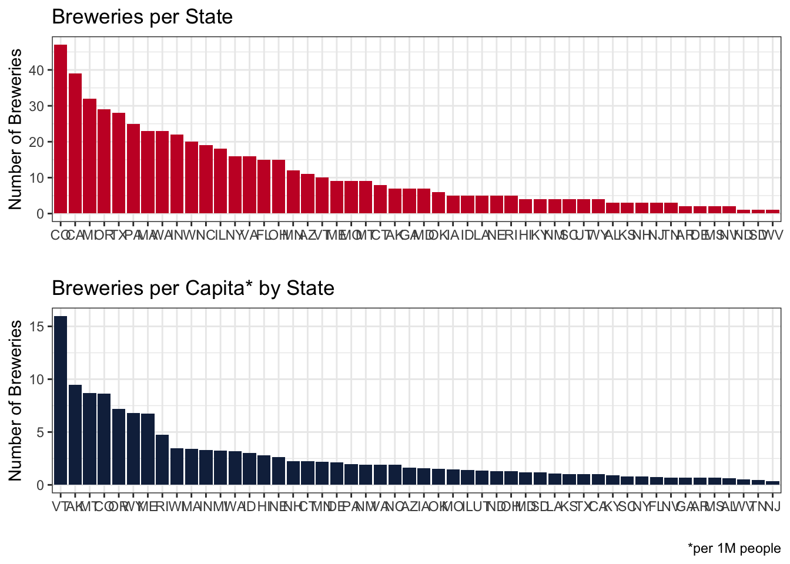
Question 2
As a check on importing and merging data, print the first six and last six observations.
cat ("The first six observations, after sorting by beer ID.")## The first six observations, after sorting by beer ID.head(merged,6)## Beer_name Beer_ID ABV IBU Brew_ID
## 1 Dale's Pale Ale 1 0.065 65 167
## 2 Gordon Ale (2009) 4 0.087 85 167
## 3 Old Chub 5 0.080 35 167
## 4 GUBNA Imperial IPA 6 0.099 100 167
## 5 Mama's Little Yella Pils 7 0.053 35 167
## 6 Ten Fidy Imperial Stout 8 0.099 98 167
## Style Ounces Brewery_name City State
## 1 American Pale Ale (APA) 12 Oskar Blues Brewery Longmont CO
## 2 American Double / Imperial IPA 12 Oskar Blues Brewery Longmont CO
## 3 Scottish Ale 12 Oskar Blues Brewery Longmont CO
## 4 American Double / Imperial IPA 12 Oskar Blues Brewery Longmont CO
## 5 Czech Pilsener 12 Oskar Blues Brewery Longmont CO
## 6 Russian Imperial Stout 12 Oskar Blues Brewery Longmont COcat ("The last six observations, after sorting by beer ID.")## The last six observations, after sorting by beer ID.tail(merged,6)## Beer_name Beer_ID ABV IBU Brew_ID
## 2405 Parapet ESB 2687 0.056 47 1
## 2406 Stronghold 2688 0.060 25 1
## 2407 Pumpion 2689 0.060 38 1
## 2408 Wall's End 2690 0.048 19 1
## 2409 Maggie's Leap 2691 0.049 26 1
## 2410 Get Together 2692 0.045 50 1
## Style Ounces Brewery_name
## 2405 Extra Special / Strong Bitter (ESB) 16 NorthGate Brewing
## 2406 American Porter 16 NorthGate Brewing
## 2407 Pumpkin Ale 16 NorthGate Brewing
## 2408 English Brown Ale 16 NorthGate Brewing
## 2409 Milk / Sweet Stout 16 NorthGate Brewing
## 2410 American IPA 16 NorthGate Brewing
## City State
## 2405 Minneapolis MN
## 2406 Minneapolis MN
## 2407 Minneapolis MN
## 2408 Minneapolis MN
## 2409 Minneapolis MN
## 2410 Minneapolis MNQuestion 3: Address the missing values in each column.
Data Exploration:
Determine Which Variables Have Missing Values and How Many
## [1] "Beer_name" "0"
## [1] "Beer_ID" "0"
## [1] "ABV" "62"
## [1] "IBU" "1005"
## [1] "Brew_ID" "0"
## [1] "Style" "0"
## [1] "Ounces" "0"
## [1] "Brewery_name" "0"
## [1] "City" "0"
## [1] "State" "0"## [1] 1005## [1] 1005Fill ABV missing values:
For filled each missing ABV value with the median ABV value for that Beer Style. For example, if the missing ABV was for an IPA, then we filled the value with the median ABV value for IPAs.
Filled ABV values are placed in the merged data frame as merged$ABVfill.
## Warning: Removed 62 rows containing non-finite values (stat_boxplot).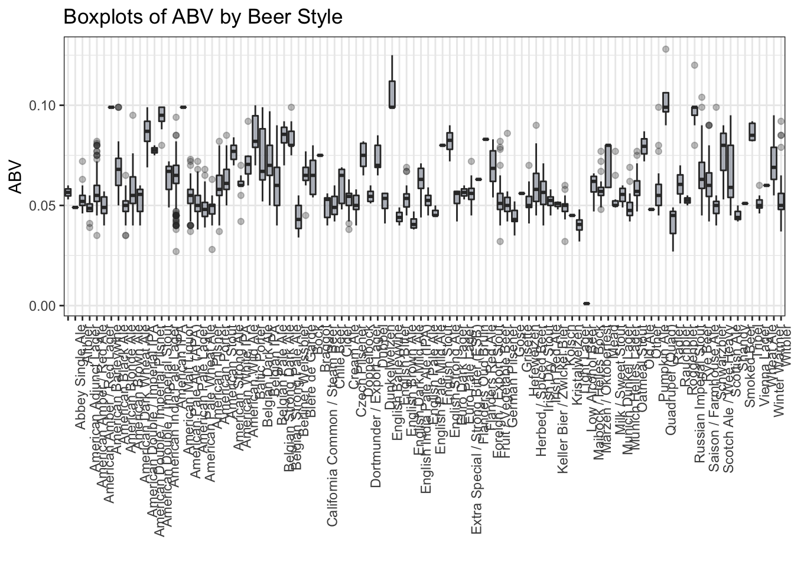
## [1] 55 56 57 58 59 62 111 126 166 170 175 196 223 289
## [15] 290 291 292 293 330 332 345 348 460 513 530 560 570 575
## [29] 641 642 643 644 708 712 731 791 821 857 858 924 1104 1288
## [43] 1468 1494 1496 1527 1533 1539 1683 1934 2045 2064 2066 2086 2102 2103
## [57] 2193 2208 2209 2210 2211 2316## integer(0)Fill IBU missing values:
We used a regression tree with ABV and Beer Style as predictors to fill missing IBU values. Filled IBU values are placed in the merged data frame as merged$IBUfill. 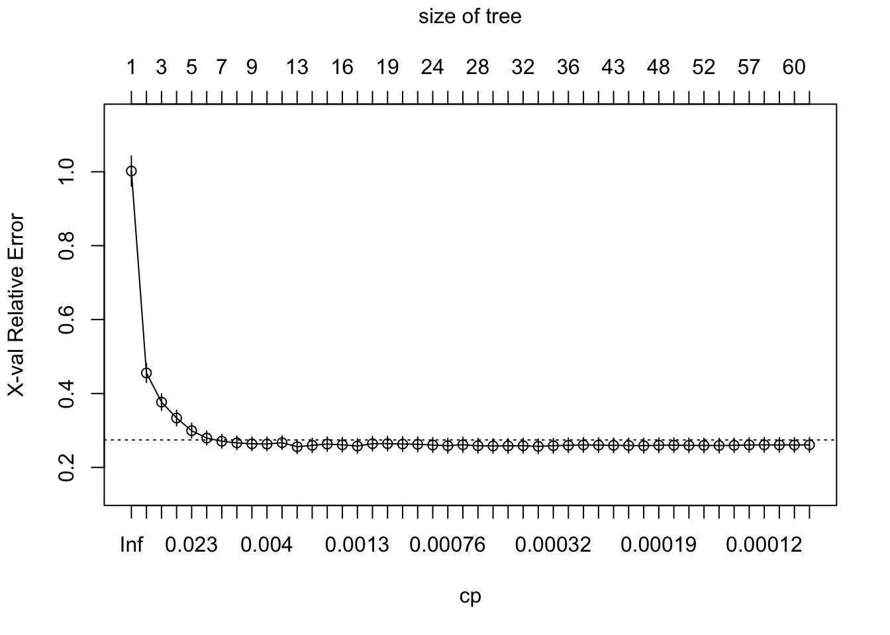
## [1] 60200.85## [1] 171.5124## [1] 13.09627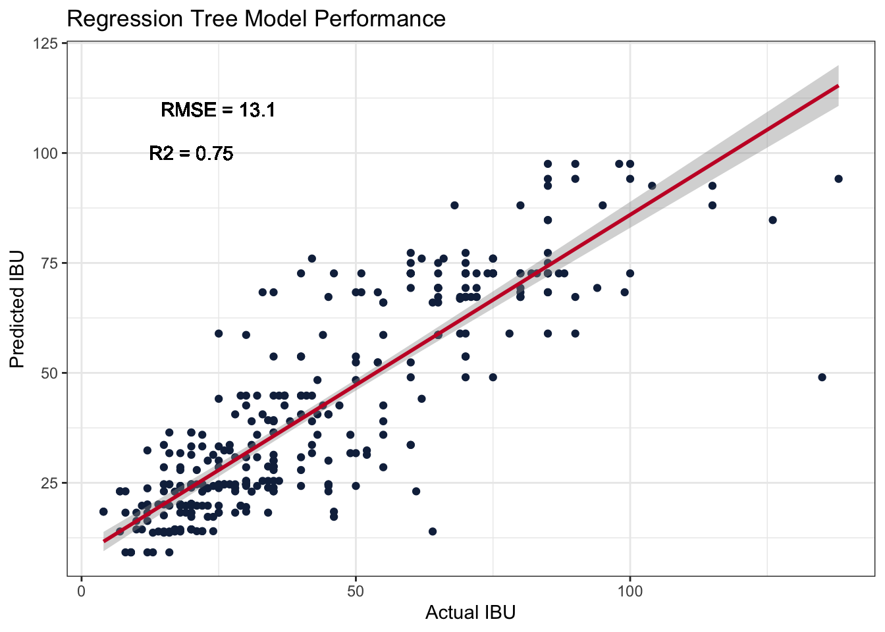
Question 4
Compute the Median alcohol content for all the beers in each state.
# drop any observations without valid ABV values, group by state, and compute the median
abv_df <- merged %>% group_by(State) %>%
summarize(median_abv = median(ABV,na.rm=TRUE),median_abvfill = median(ABVfill))
# order by median ABV
abv_df$State <- factor(abv_df$State,level=abv_df$State[order(abv_df$median_abvfill,decreasing=TRUE)])Here are the original data, with missing observations dropped:
# ..and plot
abv_df %>% ggplot(aes(x=State,y=median_abv)) +
geom_col(color="#13294b",fill="#C8102E") +
theme(aspect.ratio = 0.2,axis.text=element_text(size=4)) +
ylab('Median ABV') +
ggtitle('Median ABV by state (missing values dropped)')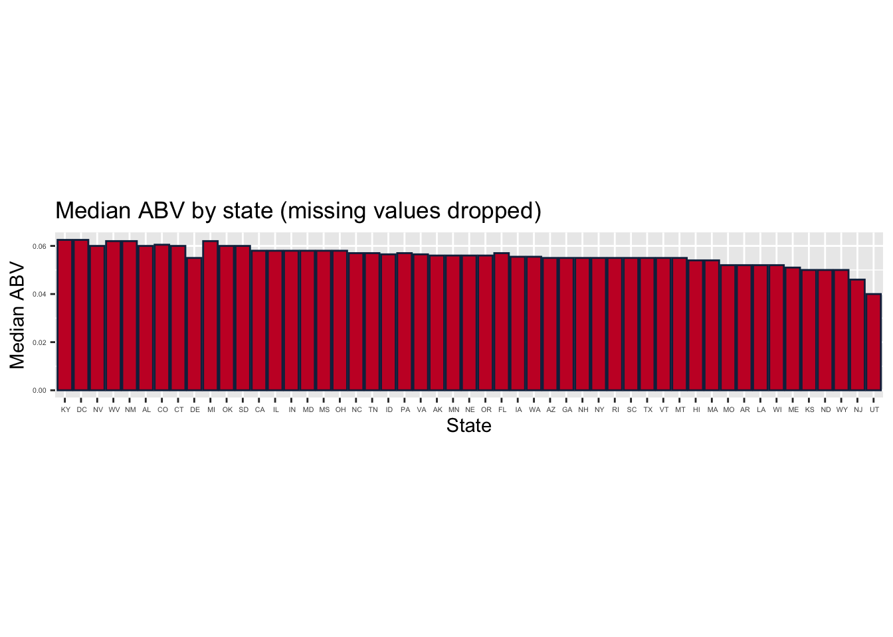
and here is the same plot, with missing values infilled. Note that the ordering of states is the same for these two graphs.
abv_df %>% ggplot(aes(x=State,y=median_abvfill)) +
geom_col(color="#13294b",fill="#C8102E") +
theme(aspect.ratio = 0.2,axis.text=element_text(size=4)) +
ylab('Median ABV') +
ggtitle('Median ABV by state (missing values infilled)')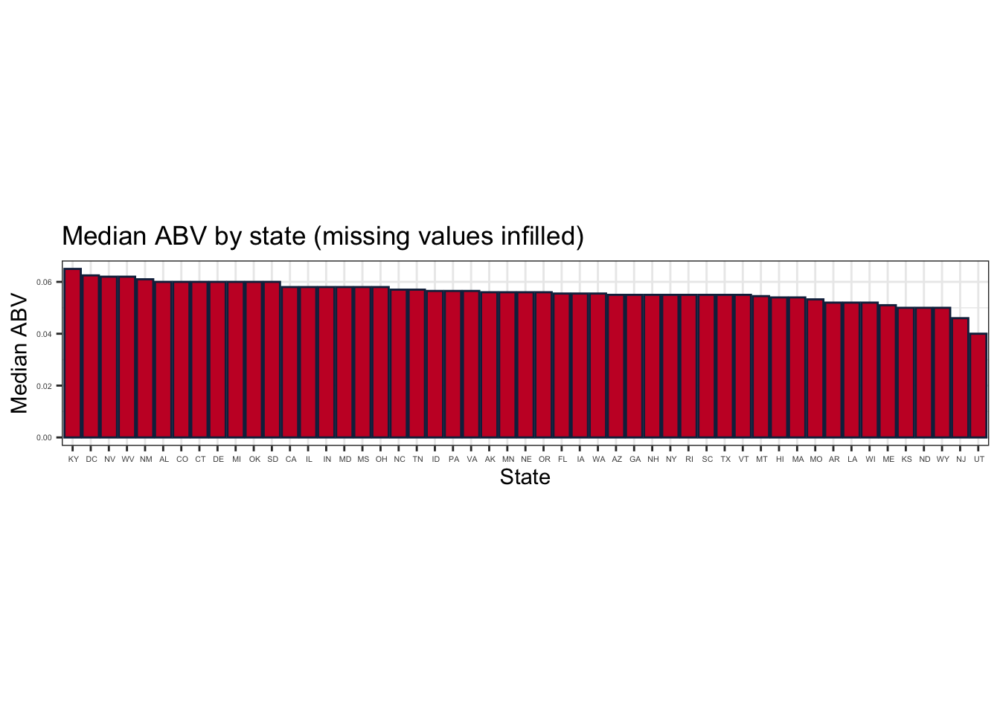
Here is the same data, with each state colored by the its median ABV value.
# change up a bit to make a map
abv_df$State <- str_trim(abv_df$State, "left")
colnames(abv_df)[1] = "abbr"
abv_df$abbr <- as.character(abv_df$abbr)
abv_by_state_tomap <- merge(abv_df, states_and_dc, by="abbr")
plot_usmap(regions = c("states"), data = abv_by_state_tomap,
values = "median_abvfill", theme = theme_map(), labels = FALSE,
label_color = "black") +
scale_fill_continuous(name = "ABV", low="ivory", high="#c8102e") +
theme(legend.position="right") +
labs(title = 'Median ABV of beers by state, infilled data')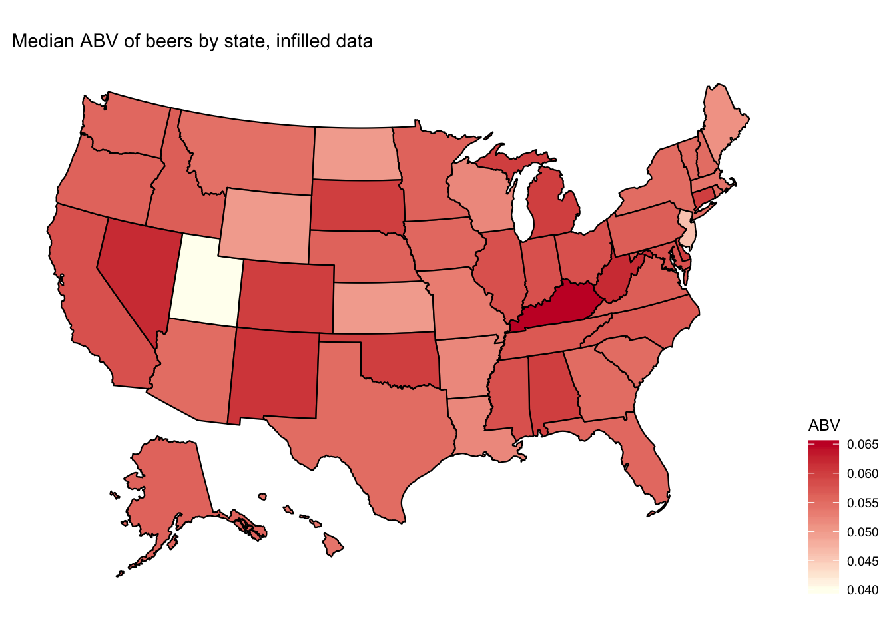
Compute the median bitterness unit for all the beers in each state
# drop any obsvervations without valid IBU values, roup by state, and compute the median
ibu_df <- merged %>% group_by(State) %>%
summarize(median_ibu = median(IBU,na.rm=TRUE),median_ibufill=median(IBUfill))
# order by median IBU
ibu_df$State <- factor(ibu_df$State,level=ibu_df$State[order(ibu_df$median_ibufill,decreasing=TRUE)])Here are the original data, with missing observations dropped:
# ..and plot
ibu_df %>% ggplot(aes(x=State,y=median_ibu)) +
geom_col(color="#13294b",fill="#C8102E") +
theme(aspect.ratio = 0.2,axis.text=element_text(size=4)) +
ylab('Median IBU') +
ggtitle('Median IBU by state (missing values dropped)')## Warning: Removed 1 rows containing missing values (position_stack).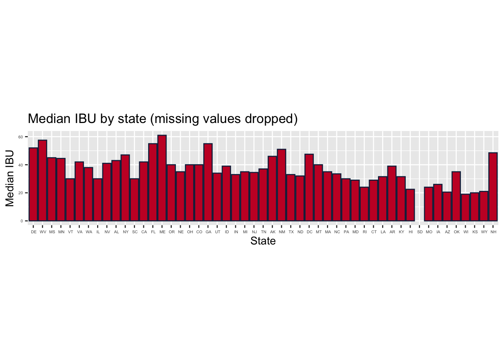
and here is the same plot, with missing values infilled. Note that the ordering of states is the same for these two graphs.
ibu_df %>% ggplot(aes(x=State,y=median_ibufill)) +
geom_col(color="#13294b",fill="#C8102E") +
theme(aspect.ratio = 0.2,axis.text=element_text(size=4)) +
ylab('Median IBU') +
ggtitle('Median IBU by state (missing values infilled)')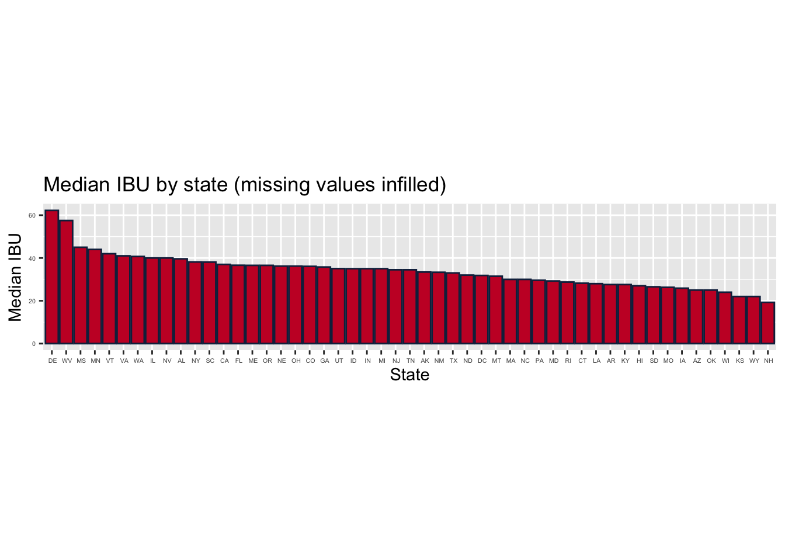
Here is the same data, with each state colored by the its median IBU value.
# change a bit to make a map
ibu_df$State <- str_trim(ibu_df$State, "left")
colnames(ibu_df)[1] = "abbr"
ibu_df$abbr <- as.character(ibu_df$abbr)
ibu_by_state_tomap <- merge(ibu_df, states_and_dc, by="abbr")
plot_usmap(regions = c("states"), data = ibu_by_state_tomap,
values = "median_ibufill", theme = theme_map(), labels = FALSE,
label_color = "black") +
scale_fill_continuous(name = "ABV", low="ivory", high="#13294b") +
theme(legend.position="right") +
labs(title = 'Median ABV of beers by state')
Question 5 - Which state has the maximum ABV and IBU?
Max ABV
Colorado has the maximum ABV at 12.8%
#run twice: 1) with missing values, 2) without missing values
maxABVnofill <- merged %>%
group_by(State) %>%
summarize(maxABV = max(ABV, na.rm = TRUE)) %>%
arrange(desc(maxABV))
maxABVfill <- merged %>%
group_by(State) %>%
summarize(maxABV = max(ABVfill)) %>%
arrange(desc(maxABV))
# no difference in the top 10 states when using ABV vs ABVfill
#########################################
# try a diverging bar chart
theme_set(theme_bw())
# Data Prep for ABV
maxABVfill$maxABV_z <- round((maxABVfill$maxABV - mean(maxABVfill$maxABV))/
sd(maxABVfill$maxABV), 2) # compute normalized mpg
maxABVfill$maxABV_type <- ifelse(maxABVfill$maxABV_z < 0, "below", "above") # above / below avg flag
maxABVfill <- maxABVfill[order(maxABVfill$maxABV_z), ] # sort
maxABVfill$State <- factor(maxABVfill$State, levels = maxABVfill$State) # convert to factor to retain sorted order in plot.Diverging Barchart for ABV:
ggplot(maxABVfill, aes(x=State, y=maxABV_z, label=maxABV_type)) +
geom_bar(stat='identity', aes(fill=maxABV_type), width=.5) +
scale_fill_manual(name="Maximum ABV",
labels = c("Above Average", "Below Average"),
values = c("above"="#13294b", "below"="#b1b3b3")) +
labs(title= "Normalized maximum ABV by State", y="maximum ABV z-score", x="") +
coord_flip()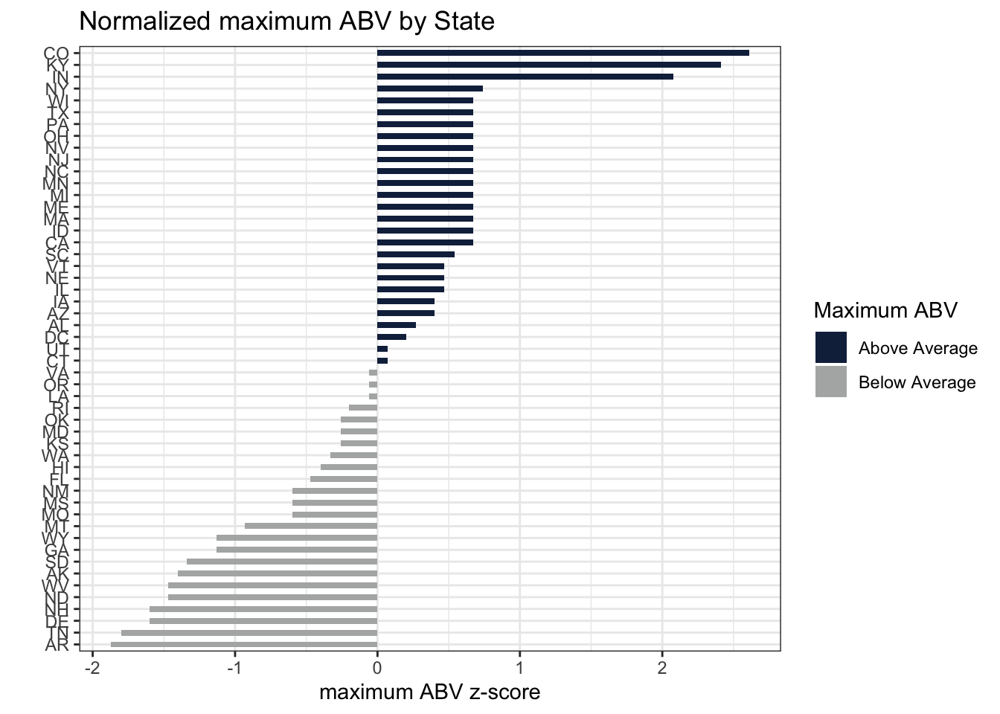
Zoom in on top 5 states with the highest ABV:
maxABVfill %>% filter(State == " CO" | State == " KY" | State == " IN" | State == " NY" | State == " WI") %>% ggplot(aes(x=State, y=maxABV)) +
geom_bar(stat='identity', fill = "#13294b", width=.9) +
coord_flip() +
geom_text(aes(label=maxABV), position=position_dodge(width=0.9), hjust=+1.25, col="white") +
labs(title= "States with the Highest ABV", x="", y="ABV") 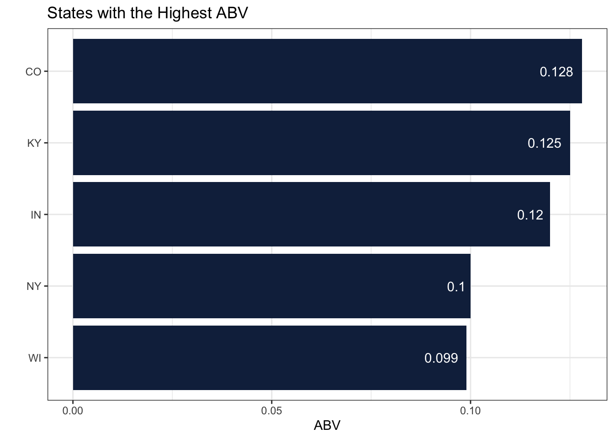
Which state has the most bitter beer?
Oregon has the maximum IBU at 138
#run twice: 1) with missing values, 2) without missing values
maxIBUfill <- merged %>%
group_by(State) %>%
summarize(maxIBU = max(IBUfill)) %>%
arrange(desc(maxIBU))
# no difference in the top 10 states when using ABV vs ABVfill
#########################################
# try a diverging bar chart
theme_set(theme_bw())
# Data Prep for ABV
maxIBUfill$maxIBU_z <- round((maxIBUfill$maxIBU - mean(maxIBUfill$maxIBU))/
sd(maxIBUfill$maxIBU), 2) # compute normalized mpg
maxIBUfill$maxIBU_type <- ifelse(maxIBUfill$maxIBU_z < 0, "below", "above") # above / below avg flag
maxIBUfill <- maxIBUfill[order(maxIBUfill$maxIBU_z), ] # sort
maxIBUfill$State <- factor(maxIBUfill$State, levels = maxIBUfill$State) # convert to factor to retain sorted order in plot.Diverging Barchart for ABV:
ggplot(maxIBUfill, aes(x=State, y=maxIBU_z, label=maxIBU_type)) +
geom_bar(stat='identity', aes(fill=maxIBU_type), width=.5) +
scale_fill_manual(name="Maximum IBU",
labels = c("Above Average", "Below Average"),
values = c("above"="#C8102E", "below"="#b1b3b3")) +
labs(title= "Normalized maximum IBU by State", y="maximum IBU z-score", x="") +
coord_flip()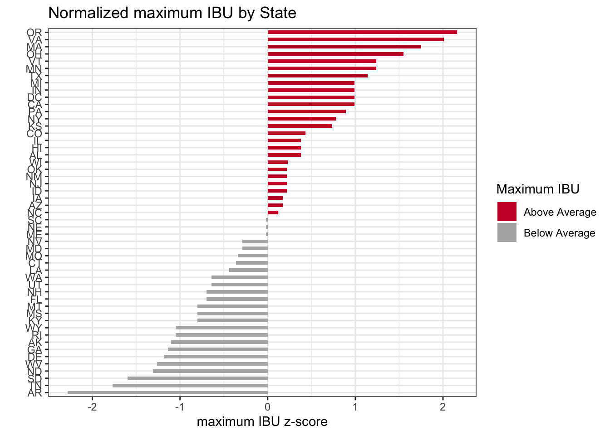
Zoom in on top 5 states with the highest IBU:
maxIBUfill %>% filter(State == " OR" | State == " VA" | State == " MA" | State == " OH" | State == " VT") %>% ggplot(aes(x=State, y=maxIBU)) +
geom_bar(stat='identity', fill = "#C8102E", width=.9) +
coord_flip() +
geom_text(aes(label=maxIBU), position=position_dodge(width=0.9), hjust=+1.25, col="white") +
labs(title= "States with the Highest IBU", x="", y="IBU") 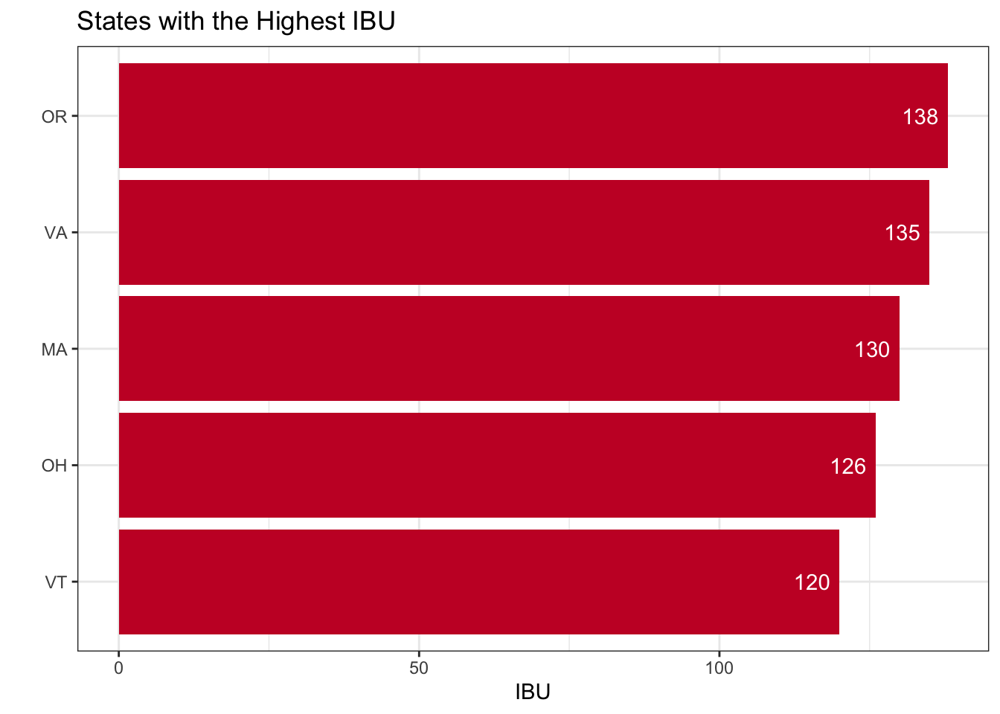
In case we want to map:
# states_and_dc <- tibble(state = state.name) %>%
# bind_cols(tibble(abbr = state.abb)) %>%
# bind_rows(tibble(state = "District of Columbia", abbr = "DC"))
#
# maxABVfill$State <- str_trim(maxABVfill$State, "left")
# colnames(maxABVfill)[1] = "abbr"
# maxABVfill$abbr <- as.character(maxABVfill$abbr)
#
# maxabv_bystate_tomap <- merge(maxABVfill, states_and_dc, by="abbr")
# maxabv_bystate_tomap$maxABVrank <- c(seq(10,1),seq(40,1))
#
# quants <- as.numeric(quantile(maxabv_bystate_tomap$maxABV, c(.1,.2,.3,.4,.5,.6,.7,.8,.9,.99,1)))
# quant_labels <- c("10th","20th","30th","40","50","60","70","80","90","99")
# maxabv_bystate_tomap$quant <- maxabv_bystate_tomap$maxABV
# for (i in 1:length(quants))
# {
# maxabv_bystate_tomap$quant[(maxabv_bystate_tomap$maxABV > quants[i])] = quants[i]
# }
#
# library(usmap)
# library(ggthemes)
#
# plot_usmap(regions = c("states"), data = maxabv_bystate_tomap,
# values = "quant", theme = theme_map(), labels = FALSE,
# label_color = "black") +
# scale_fill_continuous(name = "maximum ABV", low="ivory", high="red2") +
# theme(legend.position="right") +
# labs(title = 'max ABV quantiles')Question 6
Comment on the summary statistics and distribution of the ABV variable.
summary(merged$ABVfill)## Min. 1st Qu. Median Mean 3rd Qu. Max.
## 0.00100 0.05000 0.05600 0.05972 0.06700 0.12800sd(merged$ABVfill)## [1] 0.01344674summary(merged$ABV)## Min. 1st Qu. Median Mean 3rd Qu. Max. NA's
## 0.00100 0.05000 0.05600 0.05977 0.06700 0.12800 62sd(merged$ABV,na.rm=TRUE)## [1] 0.01354173The mean is slightly higher than the median, which would indicate a right skewed distribution, one with a long tail of high values.
merged %>%
ggplot(aes(x=ABVfill)) + geom_histogram(aes(y=..density..),bins=27) +
ggtitle('Histogram of ABV values (missing values infilled)') +
geom_vline(aes(xintercept=median(ABVfill)),color='blue',linetype='dashed',size=1) +
geom_text(mapping=aes(x=median(ABVfill),y=40,label="median"),color="blue",angle=90,vjust=-0.4,show.legend=FALSE) +
geom_vline(aes(xintercept=mean(ABVfill)), color='red',linetype='dotted',size=1) +
geom_text(mapping=aes(x=mean(ABVfill),y=40,label="mean"),color="red",angle=90,vjust=-0.4,show.legend=FALSE) +
geom_density(alpha=.2,fill="#FF6666")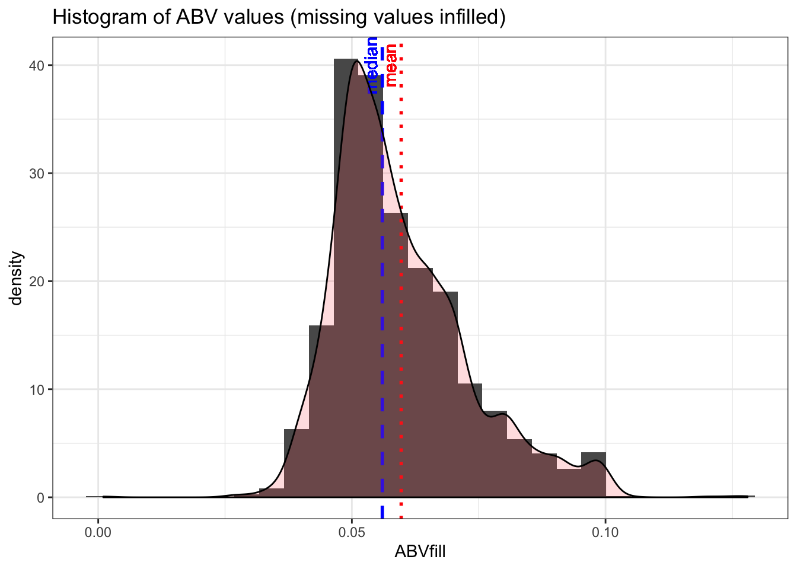
The histogram bears this out, as does a box plot
merged %>%
ggplot(aes(x="",y=ABVfill)) +
geom_boxplot() +
xlab("") + ylab("") +
ggtitle('ABV values') +
#geom_hline(yintercept=0.07,color="blue",show.legend=FALSE) +
#geom_text(mapping=aes(y=0.07,label="mean"),color="blue",vjust=-1,show.legend = FALSE) +
theme(aspect.ratio = 2.0) +
coord_cartesian(ylim=c(0,0.15))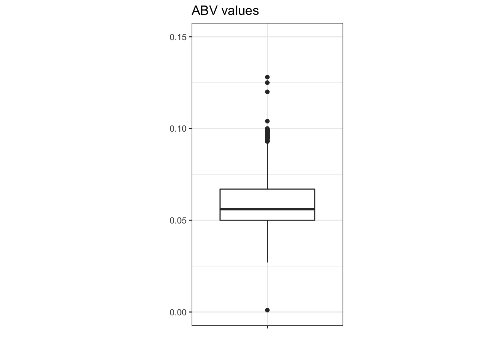
To investigate whether the ABV values are normally distributed, we do a Q-Q plot. This is a plot of the quantiles of the actual data against what would be expected from a normal distribution. If the data do follow a normal distribution, the plot would show a straight line. The more the plot deviates from a straight line, the less closely the data follow a normal distribution.
merged %>%
ggplot(aes(sample=ABVfill)) +
stat_qq() + stat_qq_line() +
ggtitle('Quantile-Quantile plot of (infilled) ABV data')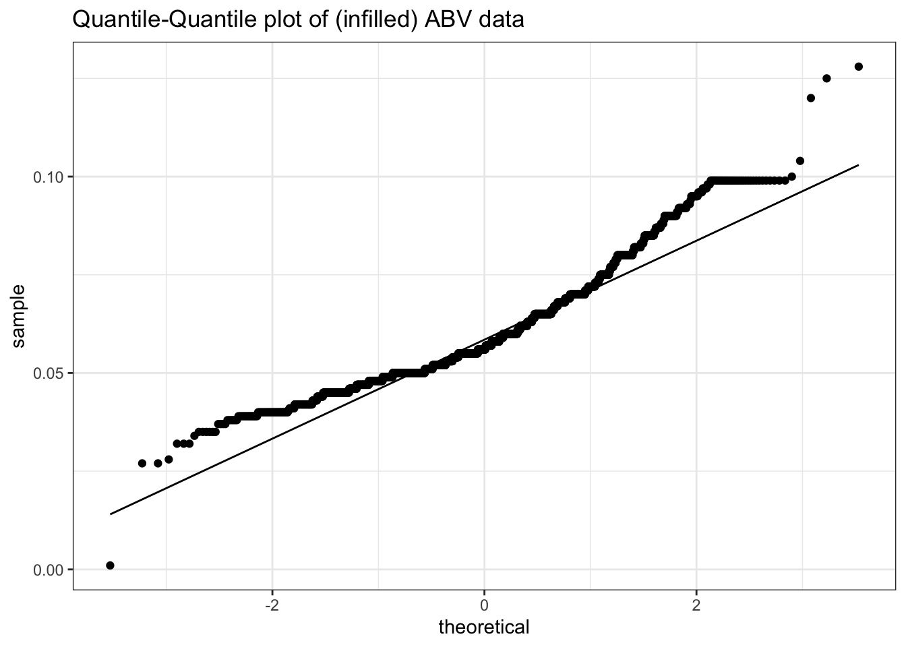
From the upward curve in this plot, we infer that the data are somewhat skewed. This confirms what the histogram shows. The apparent discontinuities at the ends of the curve are an indication that the ABV values have a few more extreme values than would be expected from a normal distribution. This confirms what was shown in the box plot.
Question 7 - Scatterplot of bitterness versus alcoholic content.
Prepare the data:
Fit linear model:
##
## Call:
## lm(formula = merged$ABVfill ~ merged$IBUfill)
##
## Residuals:
## Min 1Q Median 3Q Max
## -0.047491 -0.005705 -0.001945 0.003699 0.073666
##
## Coefficients:
## Estimate Std. Error t value Pr(>|t|)
## (Intercept) 4.487e-02 4.113e-04 109.11 <2e-16 ***
## merged$IBUfill 3.604e-04 8.606e-06 41.88 <2e-16 ***
## ---
## Signif. codes: 0 '***' 0.001 '**' 0.01 '*' 0.05 '.' 0.1 ' ' 1
##
## Residual standard error: 0.01023 on 2408 degrees of freedom
## Multiple R-squared: 0.4215, Adjusted R-squared: 0.4212
## F-statistic: 1754 on 1 and 2408 DF, p-value: < 2.2e-16Scatterplots:
Fit linear model with unfilled data only:
##
## Call:
## lm(formula = merged$ABV ~ merged$IBU)
##
## Residuals:
## Min 1Q Median 3Q Max
## -0.033288 -0.005946 -0.001595 0.004022 0.052006
##
## Coefficients:
## Estimate Std. Error t value Pr(>|t|)
## (Intercept) 4.493e-02 5.177e-04 86.79 <2e-16 ***
## merged$IBU 3.508e-04 1.036e-05 33.86 <2e-16 ***
## ---
## Signif. codes: 0 '***' 0.001 '**' 0.01 '*' 0.05 '.' 0.1 ' ' 1
##
## Residual standard error: 0.01007 on 1403 degrees of freedom
## (1005 observations deleted due to missingness)
## Multiple R-squared: 0.4497, Adjusted R-squared: 0.4493
## F-statistic: 1147 on 1 and 1403 DF, p-value: < 2.2e-16Scatterplot with statistics:
## Warning: Removed 1005 rows containing non-finite values (stat_smooth).## Warning: Removed 1005 rows containing missing values (geom_point).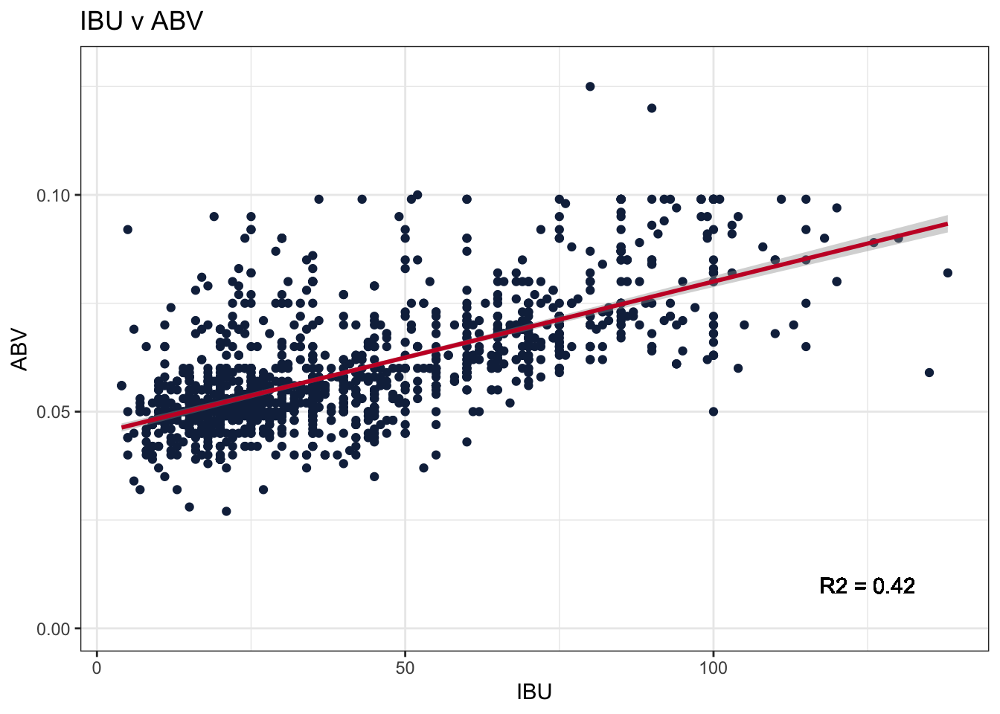
Question 8
Categorize Ales…
# categorize beers as ipa, or other ale (still have orig columns as well as infilled)
beers_categorized <- merged %>%
mutate(is_ipa = grepl("\\bIPA\\b",Style,ignore.case = TRUE)) %>%
mutate(is_ale = grepl("\\bale\\b",Style,ignore.case = TRUE)) %>%
mutate(is_american = grepl("\\bamerican\\b",Style,ignore.case = TRUE)) %>%
mutate(is_belgian = grepl("\\bbelgian\\b",Style,ignore.case = TRUE)) %>%
mutate(is_other_ale = (is_ale & !is_ipa))
# keep only the ales
only_ales <- beers_categorized %>% filter(is_ipa | is_other_ale)
# and make a factor for the type
# here I replace orig columns with infilled columns.
infill_normalized <- only_ales %>%
filter(is_ipa | is_other_ale) %>%
mutate(category = as.factor(ifelse(is_ipa,'IPA','Other'))) %>%
select(-IBU,-ABV) %>%
rename(IBU=IBUfill,ABV=ABVfill) %>%
mutate(abv_z = scale(ABV), ibu_z = scale(IBU)) %>%
select(ABV,IBU,abv_z,ibu_z,category)
# synthetic data, for looking at predictions 'everywhere'
dummy <- data.frame(ABV=rep(0,100*100),IBU=rep(0,100*100))
ABV <- linspace(min(infill_normalized$ABV),max(infill_normalized$ABV),100)
IBU <- linspace(min(infill_normalized$IBU),max(infill_normalized$IBU),100)
cnt <- 0
for (i in 1:100)
{
for (j in 1:100)
{
cnt <- cnt + 1
dummy[cnt,] <- c(ABV[i],IBU[j])
}
}
synth <- dummy %>% mutate(abv_z = scale(ABV), ibu_z = scale(IBU))
# here I leave orig columns alone, but drop observations with missing values.
for_orig_plot <- only_ales %>%
filter(is_ipa | is_other_ale) %>%
mutate(category = as.factor(ifelse(is_ipa,'IPA','Other'))) %>%
drop_na(ABV,IBU)
# columns to use for predictors
cols_for_knn = c("abv_z","ibu_z")
# counts
total_count <- nrow(beers_raw)
ipa_count <- only_ales %>% filter(is_ipa) %>% nrow()
other_count <- only_ales %>% filter(is_other_ale) %>% nrow()
ale_count <- ipa_count + other_count
ale_percent <- round(100 * ale_count / total_count)
ipa_percent <- round(100 * ipa_count / total_count)
other_percent <- round(100 * other_count / total_count)
ipa_percent_of_ales <- round(100 * ipa_count / ale_count)
other_percent_of_ales <- round(100 * other_count / ale_count)Out of a total of 2410 beers, 571 are IPA and 963 are other ales.
64 % of beers are ales.
24 % of beers are IPA.
37 % of ales are IPA.
Make a scatter plot of IBU vs ABV, with only IPA’s and other ales
for_orig_plot %>% ggplot(aes(x=IBU,y=ABV,color=category)) +
geom_point() + ggtitle('ABV vs IBU for IPAs and other ales (missing values dropped)') +
coord_cartesian(ylim = c(0.02,0.1),xlim=c(0,150)) +
scale_color_manual(breaks = c("IPA", "Other"),
values=q8_colors)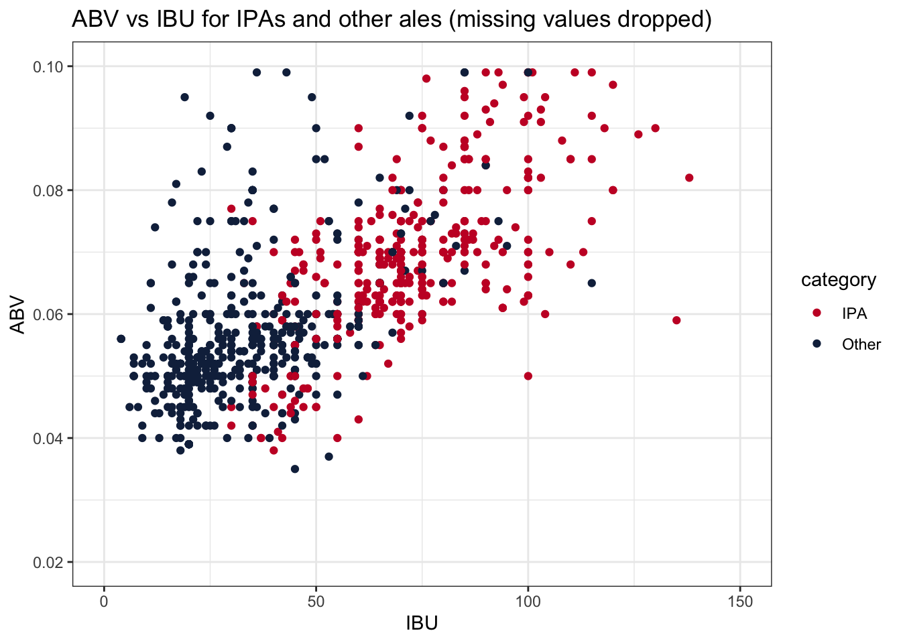
Make the same scatter plot, but using infilled data.
infill_normalized %>% ggplot(aes(x=IBU,y=ABV,color=category)) +
geom_point() + ggtitle('ABV vs IBU for IPAs and other ales (infilled)') +
coord_cartesian(ylim = c(0.02,0.1),xlim=c(0,150)) +
scale_color_manual(breaks = c("IPA", "Other"),
values=q8_colors)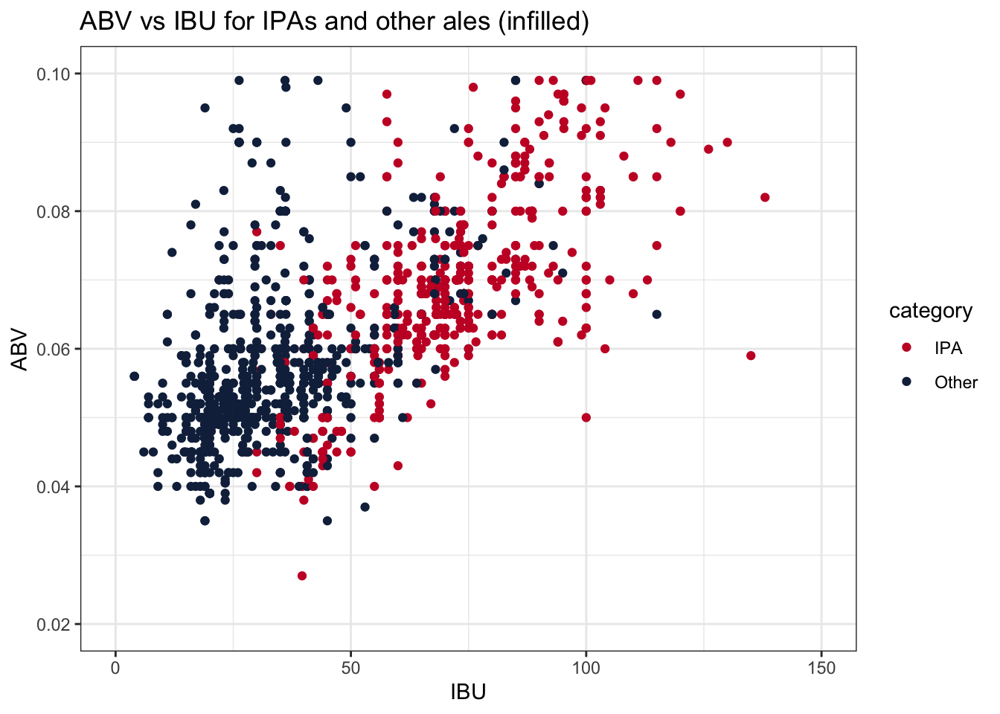
From these scatter plots, it appears that the character of the relationship between ABV and IBU, for both IPA’s and other ales, is unaffected by the infilling. This gives us confidence that the infilling was valid, so further analysis will use only the infilled values.
We know that 37 % of ales are IPA, so a fixed guess that any given Ale is not IPA is the simplest model. We expect this predictor will have an accuracy of 63 %. It would have a sensitivity of 100 % but specificity of 0 %.
Make a constant classifier and check its performance.
size = nrow(infill_normalized)
always_ipa <- data.frame(sample(x=as.factor(c('IPA','Other')),size,replace=TRUE,prob=c(0,1)))
colnames(always_ipa) <- c('guess')
CM_always <- confusionMatrix(always_ipa$guess,infill_normalized$category,positive=positive_value)
always_acc <- CM_always$overall[1] # accuracy
always_sens <- CM_always$byClass[1] # sensitivity
always_spec <- CM_always$byClass[2] # specificityThe accuracy turns out to be 63 %.
The sensitivity is 100 %.
The specificity is 0 %.
Make a random guess classifier and check its performance
A slightly more sophisticated model would be to randomly guess that a beer is an ale 63 % of the time. We simulate this to see how such a ‘guessing’ model would perform.
Try it 100 times and find its average performance.
acc_guess <- matrix(nrow=iterations,ncol=3)
size = nrow(infill_normalized)
for (j in 1:iterations)
{
guess <- data.frame(sample(x=as.factor(c('IPA','Other')),size,replace=TRUE,prob=c(ipa_count,other_count)))
colnames(guess) <- c('guess')
CM_guess <- confusionMatrix(guess$guess,infill_normalized$category,positive=positive_value)
acc_guess[j,1] <- CM_guess$overall[1] # accuracy
acc_guess[j,2] <- CM_guess$byClass[1] # sensitivity
acc_guess[j,3] <- CM_guess$byClass[2] # specificity
}
mean_stats <- colMeans(acc_guess)
mean_accuracy <- mean_stats[1]
mean_sensitivity <- mean_stats[2]
mean_specificity <- mean_stats[3]
guess_acc <- mean_stats[1]
guess_sens <- mean_stats[2]
guess_spec <- mean_stats[3]The random guess model has accuracy of 53 %.
Its sensitivity is 63 %.
Its specificity is 37 %.
Look at distributions of ABV and IBU
To see if ABV and IBU values can help us predict if an ale is IPA or not, first look at distributions of these quantities, separated by IPA or other ale.
infill_normalized %>% ggplot(aes(x=ABV)) +
geom_histogram(aes(color=category,fill=category),
position="identity",alpha=0.4,
show.legend = TRUE,bins=21) +
ggtitle('histogram of ABV by category (infilled)') +
scale_color_manual(values=q8_colors) +
scale_fill_manual(values=q8_colors)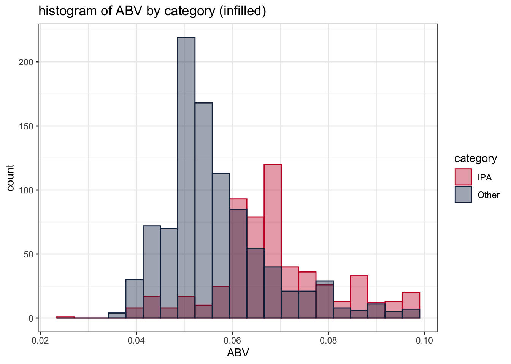
infill_normalized %>% ggplot(aes(x=IBU)) +
geom_histogram(aes(color=category,fill=category),
position="identity",alpha=0.4,
show.legend = TRUE,bins=21) +
ggtitle('histogram of IBU by category (infilled)') +
scale_color_manual(values=q8_colors) +
scale_fill_manual(values=q8_colors)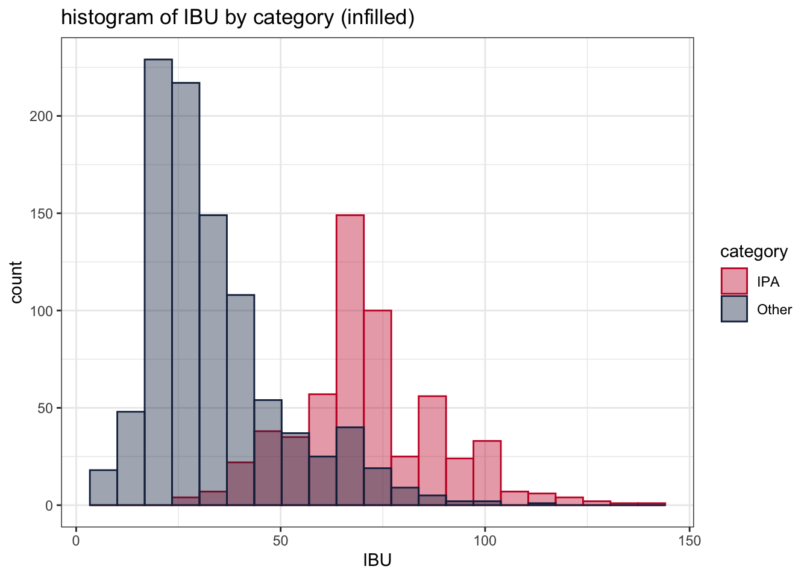
There appears to be clear separation of both ABV and IBU between IPA’s and other ales. Since the distributions appear close to normal, and similiar in shape for the two types of ale, we proceed with t-tests to determine if there is a statistically significant difference.
ibu_ttest <- t.test(IBU ~ category,infill_normalized,var.equal=FALSE)
ibu_ttest##
## Welch Two Sample t-test
##
## data: IBU by category
## t = 40.367, df = 1117.4, p-value < 2.2e-16
## alternative hypothesis: true difference in means is not equal to 0
## 95 percent confidence interval:
## 35.43793 39.05898
## sample estimates:
## mean in group IPA mean in group Other
## 71.19796 33.94950abv_ttest <- t.test(ABV ~ category,infill_normalized,var.equal=FALSE)
abv_ttest##
## Welch Two Sample t-test
##
## data: ABV by category
## t = 19.173, df = 1100.9, p-value < 2.2e-16
## alternative hypothesis: true difference in means is not equal to 0
## 95 percent confidence interval:
## 0.01082080 0.01328807
## sample estimates:
## mean in group IPA mean in group Other
## 0.06880210 0.05674766Check statistically significant difference in ABV and IBU between IPA’s and other ales.
abv_col <- c(abv_ttest$estimate[2],
abv_ttest$estimate[1])
ibu_col <- c(ibu_ttest$estimate[2],
ibu_ttest$estimate[1])
hypothesis <- data.frame(abv_col,ibu_col)
colnames(hypothesis) <- c('ABV(%)','IBU(Intl Bitterness Units)')
rownames(hypothesis) <- c('IPA','Other Ales')
kable(hypothesis,digits=4,caption = 'Difference in characteristics between IPAs and other Ales') %>%
kable_styling(bootstrap_options = c('striped'))| ABV(%) | IBU(Intl Bitterness Units) | |
|---|---|---|
| IPA | 0.0567 | 33.9495 |
| Other Ales | 0.0688 | 71.1980 |
Statistical Significance
abv_col <- c(format(abv_ttest$p.value,digits=4),
paste(format(abv_ttest$conf.int[1],digits=3),format(abv_ttest$conf.int[2],digits=4),sep=" .. "))
ibu_col <- c(format(ibu_ttest$p.value,digits=4),
paste(format(ibu_ttest$conf.int[1],digits=3),format(ibu_ttest$conf.int[2],digits=1),sep=" .. "))
stat_sig <- data.frame(abv_col,ibu_col)
colnames(stat_sig) <- c('ABV','IBU')
rownames(stat_sig) <- c('p-value','95% conf int')
kable(stat_sig,caption = 'Statistical significance from Welch t-test') %>%
kable_styling()| ABV | IBU | |
|---|---|---|
| p-value | 6.388e-71 | 1.773e-220 |
| 95% conf int | 0.0108 .. 0.01329 | 35.4 .. 39 |
Create a Naive Bayes Classifier
Since there are statistically signficant differences with ABV and IBU, we first try a Naive Bayes classifier.
pred_indices <- c("ABV","IBU")
acc_nb = matrix(nrow=iterations,ncol=3)
# for repeatability
set.seed(42)
for (j in 1:iterations)
{
trainIndices = sample(seq(1:length(infill_normalized$ABV)),
round(.7*length(infill_normalized$ABV)))
trainBeer = infill_normalized[trainIndices,]
testBeer = infill_normalized[-trainIndices,]
model_nb <- naiveBayes(trainBeer[,pred_indices],trainBeer$category)
CM_nb <- confusionMatrix(table(predict(model_nb,testBeer[,pred_indices]),
as.factor(testBeer$category)),positive=positive_value)
acc_nb[j,1] <- CM_nb$overall[1] # accuracy
acc_nb[j,2] <- CM_nb$byClass[1] # sensitivity
acc_nb[j,3] <- CM_nb$byClass[2] # specificity
}
mean_stats <- colMeans(acc_nb)
nb_acc <- mean_stats[1]
nb_sens <- mean_stats[2]
nb_spec <- mean_stats[3]Averaging over 100 trials, the Naive Bayes classifier has
accuracy of 86 %
sensitivity of 89 %
specificity of 81 %
To understand the classification regions of the Naieve Bayes classifier, we make a prediction at every point in the ABV vs IBU space.
beer_nb <- naiveBayes(infill_normalized[,pred_indices],infill_normalized$category)
nb_predict <- predict(beer_nb, synth)
synth_w_nbpred <- cbind(synth,nb_predict)
synth_w_nbpred %>% ggplot(aes(x=IBU,y=ABV,color=nb_predict)) + geom_point() +
ggtitle('Class Map from Naive Bayes') +
scale_color_manual(breaks = c("IPA", "Other"),values=q8_colors)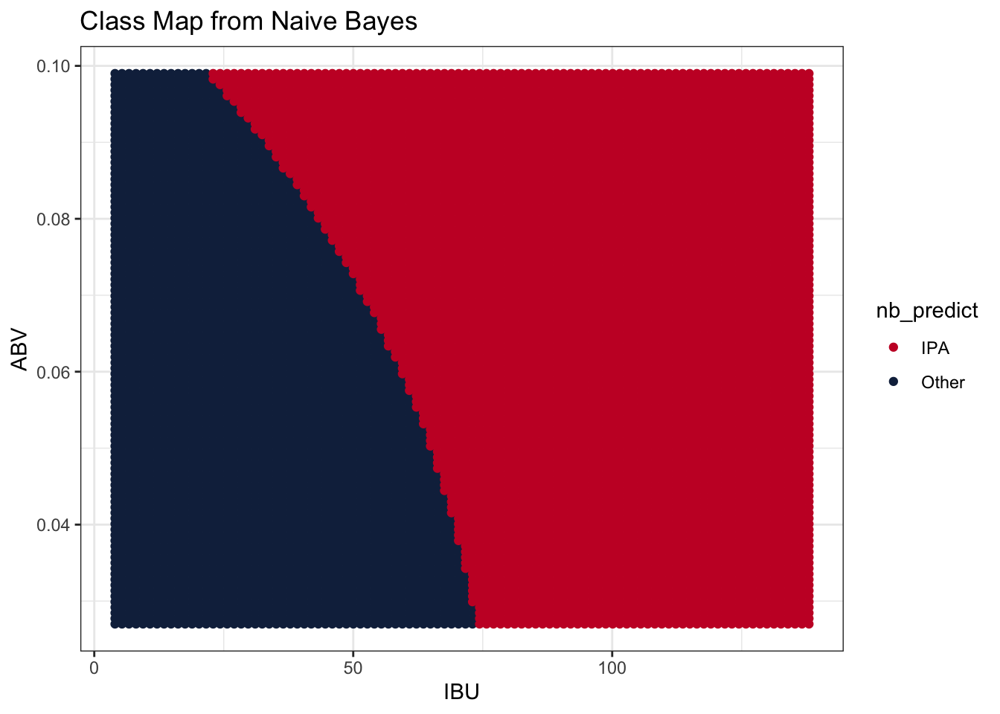
The Naive Bayes classifier draws a clear boundary betweeen two regions. Ales with high ABV and IBU are predicted to be IPA.
However, this does not well capture the relationship that is apparent in the scatter plot of ABV vs IBU for IPA’s and other ales. To better use this information, we use a KNN classifier, labeling an ale as IPA or not according to the majority of its nearest neighbors. To tune the KNN model, we try several different neighborhood sizes (k).
Create a KNN Classifer
Make 100 iterations of the model, splitting the data into training and test datasets each time and averaging the performance statistics of the model. Do this for a number of different k values.
# for repeatability
set.seed(42)
splitPerc <- .7
numks <- 50
knn_stats = matrix(nrow=numks,ncol=4)
for (i in 1:numks)
{
acc = matrix(nrow=iterations,ncol=1)
sens = matrix(nrow=iterations,ncol=1)
spec = matrix(nrow=iterations,ncol=1)
for (j in 1:iterations)
{
trainIndices = sample(1:dim(infill_normalized)[1],round(splitPerc * dim(infill_normalized)[1]))
train = infill_normalized[trainIndices,]
test = infill_normalized[-trainIndices,]
classifications = knn(train[,cols_for_knn],
test[,cols_for_knn],
as.factor(train$category), prob = TRUE, k = i)
CM = confusionMatrix(table(as.factor(test$category),classifications),positive=positive_value)
acc[j] = CM$overall[1]
sens[j] = CM$byClass[1]
spec[j] = CM$byClass[2]
}
knn_stats[i,1] = i
knn_stats[i,2] = colMeans(acc)
knn_stats[i,3] = colMeans(sens)
knn_stats[i,4] = colMeans(spec)
}Look at all 50 values of k to determine what k value gives best performance.
stats_frame <- data.frame(knn_stats)
colnames(stats_frame) <- c("k","accuracy","sensitivity","specificity")
for_plot <- reshape2::melt(stats_frame,id.var='k')
for_plot %>% ggplot(aes(x=k,y=value,col=variable)) +
geom_line() +
xlab('k') +
ylab('percent') +
ggtitle('Performance of Classifier by K')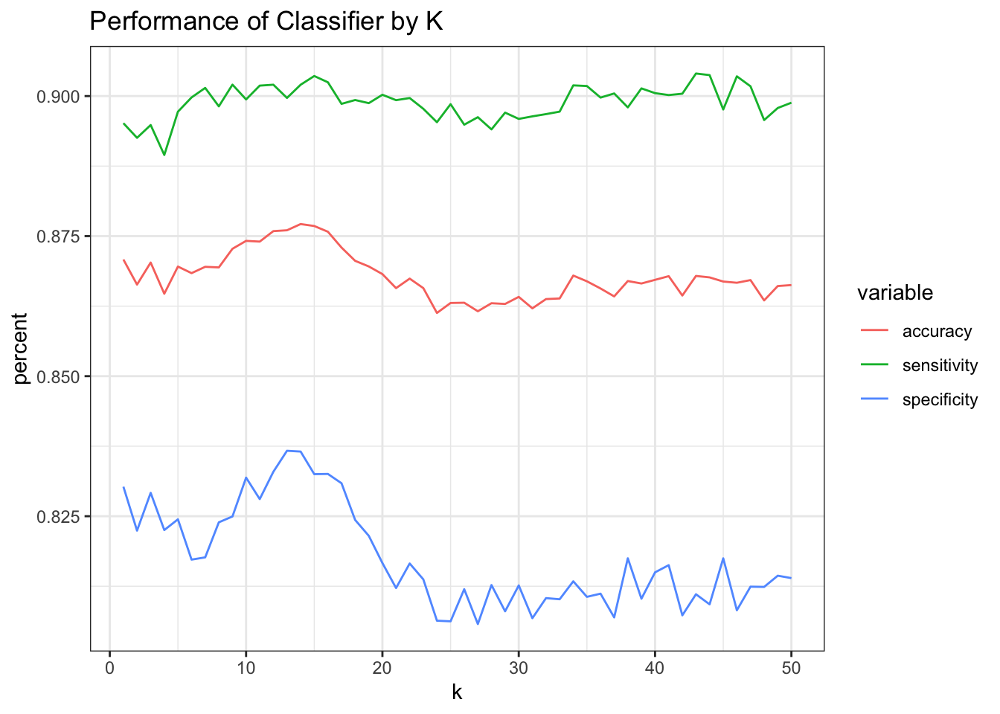
combined_stats <- stats_frame %>%
mutate(sums = accuracy + sensitivity + specificity)
best_k_acc <- which.max(combined_stats$accuracy)
best_k_sens <- which.max(combined_stats$sensitivity)
best_k_spec <- which.max(combined_stats$specificity)
best_k_combined <- which.max(combined_stats$sums)
chosen_k = best_k_combined
best_acc <- round(100*combined_stats$accuracy[chosen_k])
best_sens <- round(100*combined_stats$sensitivity[chosen_k])
best_spec <- round(100*combined_stats$specificity[chosen_k])k of 14 is best for accuracy.
k of 43 is best for sensitivity. k of 13 is best for specificity.
we choose 14 as best overall, since it gives the highest sum of accuracy, sensitivity, and specificity.
As with the Naive Bayes classifier, to understand the classification regions of the KNN classifier, we make a prediction at every point in the ABV vs IBU space.
plot_title <- paste('Class map from knn with k of',as.character(chosen_k))
synth_pred_knn <- knn(infill_normalized[,cols_for_knn],
synth[,cols_for_knn],
as.factor(infill_normalized$category),k=chosen_k)
synth_w_knnpred <- cbind(synth,synth_pred_knn)
synth_w_knnpred %>% ggplot(aes(x=IBU,y=ABV,color=synth_pred_knn)) + geom_point() + ggtitle(plot_title) +
scale_color_manual(breaks = c("IPA", "Other"),values=q8_colors)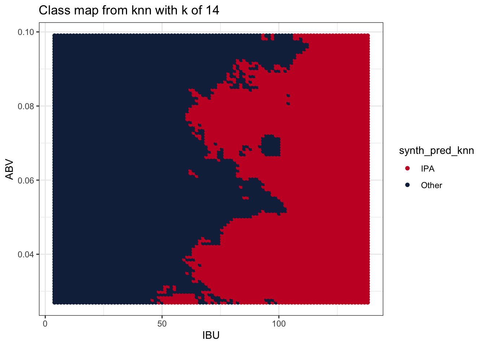
This model does capture more of the detailed relationship between ABV and IBU for IPA’s and other ales.
Finally, go back and make predictions of all points in the original dataset.
knn_pred <- knn(infill_normalized[,cols_for_knn],
infill_normalized[,cols_for_knn],
as.factor(infill_normalized$category),k=chosen_k)
with_pred <- cbind(infill_normalized,knn_pred)
with_pred %>% ggplot(aes(x=IBU,y=ABV,color=knn_pred)) + geom_point() + ggtitle('Predicted Class') +
scale_color_manual(breaks = c("IPA", "Other"),
values=q8_colors)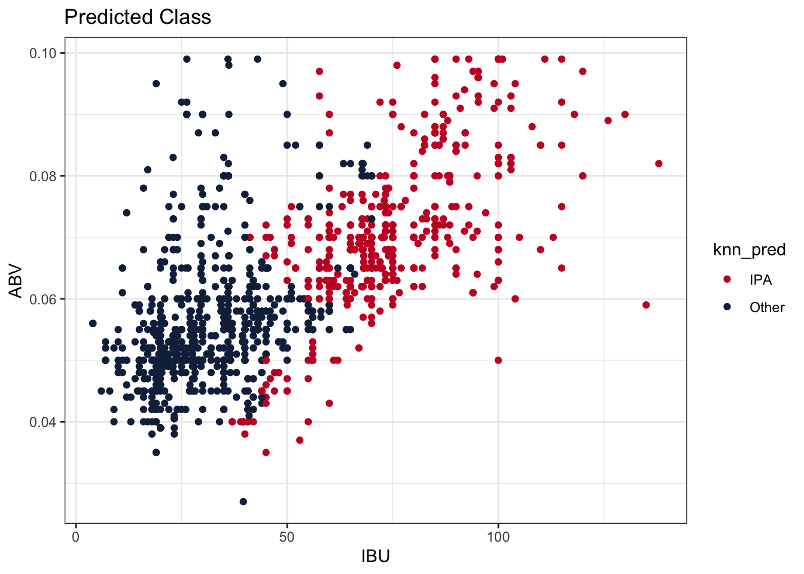
CM_knn = confusionMatrix(table(as.factor(infill_normalized$category),knn_pred),positive=positive_value)
knn_acc <- CM_knn$overall[1] # accuracy
knn_sens <- CM_knn$byClass[1] # sensitivity
knn_spec <- CM_knn$byClass[2] # specificityKNN accuracy turns out to be 89 %.
KNN sensitivity is 92 %.
KNN specificity is 85 %.
Summarizing performance of classification models…
always_perf <- 100 * c(always_sens,always_spec,always_acc)
guess_perf <- 100 * c(guess_sens,guess_spec,guess_acc)
nb_perf <- 100 * c(nb_sens,nb_spec,nb_acc)
knn_perf <- 100 * c(knn_sens,knn_spec,knn_acc)
performance <- data.frame(always_perf, guess_perf, nb_perf, knn_perf)
colnames(performance) <- c('Constant','Random','Naive Bayes','KNN')
rownames(performance) <- c('Sensitivity','Specificity','Overall Accuracy')
kable(performance,digits=2,caption = 'Performance (in percent) of models with increasing sophistication') %>%
kable_styling(bootstrap_options = c('striped'))| Constant | Random | Naive Bayes | KNN | |
|---|---|---|---|---|
| Sensitivity | 100.00 | 62.84 | 88.77 | 91.53 |
| Specificity | 0.00 | 37.43 | 81.05 | 84.78 |
| Overall Accuracy | 62.78 | 53.38 | 85.87 | 88.98 |
Question 9
Knocking their socks off: 1. find the most popular beers in each state 2. find the states that have lower than median breweries per capita 3. find states with > 5M total population 5. run k-means clustering to group selected states by beer features
Data prep:
#cleaning house:
merged$State <- str_trim(merged$State, "left")
# basic EDA
# style_count <- merged %>% group_by(Style) %>% summarize(n = n()) %>% arrange(desc(n))
# style_count %>% filter(n > 50) %>% ggplot(aes(x=reorder(Style, desc(n)), y = n)) +
# geom_bar(stat="identity", fill = "#C8102E") +
# theme(axis.text.x = element_text(angle = 45, hjust=1)) +
# labs(title="10 Most Common Styles of Craft Brews", x="", y="Count")
# get the 1st, 2nd, and 3rd most popular beers per state
stateabbr <- unique(merged$State)
popular1 <- c()
popular2 <- c()
popular3 <- c()
for (i in 1:length(stateabbr))
{
temp <- merged %>%
filter(State==stateabbr[i]) %>%
group_by(Style) %>%
summarize(n=n()) %>%
arrange(desc(n))
popular1[i] <- as.character(temp$Style)[1]
popular2[i] <- as.character(temp$Style)[2]
popular3[i] <- as.character(temp$Style)[3]
}
q9 <- data.frame(State = stateabbr, P1 = popular1, P2 = popular2, P3 = popular3)
style_count_bystate <- merged %>% group_by(State) %>% summarize(nStyles = n_distinct(Style))
q9 <- merge(q9, style_count_bystate, by="State")
tempbrewery <- breweries_raw %>% group_by(State) %>% summarize(breweryCount = n())
q9$breweryCount <- tempbrewery$breweryCount
temp <- statepop
temp$State <- temp$abbr
q9 <- merge(q9,temp, by="State")
q9$nBreweriesPerCapita = q9$breweryCount/(q9$pop_2015/1000000)
# which states have populations > 5,000,000
q9$gt5M <- "lt5M"
q9$gt5M[which(q9$pop_2015 > 5000000)] = "gt5M"
# which states have below average breweries per Capita
q9$belowperCapita <- "gtMedian"
q9$belowperCapita[which(q9$nBreweriesPerCapita < median(q9$nBreweriesPerCapita, na.rm=TRUE))] = "ltMedian"
# q9$state <- states_and_dc$state
q9$target <- "no"
q9$target[which(q9$gt5M == "gt5M" & q9$belowperCapita == "ltMedian")] = "yes"
# state land area in square miles
temp <- data.frame(State = state.abb, LandArea = state.area)
q9 <- merge(q9,temp, by="State")
q9$nStylesPerCapita <- q9$nStyles/(q9$pop_2015/1000000)
q9$PopulationPerSqMile <- q9$pop_2015/q9$LandArea
q9$nBreweriesPerSqMile <- q9$breweryCount/(q9$LandArea/1000)
# intersection of population and breweries per capita
q9$popular1st <- "N/A"
q9$popular1st[which(q9$gt5M == "gt5M" & q9$belowperCapita == "ltMedian")] =
as.character(q9$P1[which(q9$gt5M == "gt5M" & q9$belowperCapita == "ltMedian")])
q9$popular2nd <- "N/A"
q9$popular2nd[which(q9$gt5M == "gt5M" & q9$belowperCapita == "ltMedian")] =
as.character(q9$P2[which(q9$gt5M == "gt5M" & q9$belowperCapita == "ltMedian")])
q9$popular3rd <- "N/A"
q9$popular3rd[which(q9$gt5M == "gt5M" & q9$belowperCapita == "ltMedian")] =
as.character(q9$P3[which(q9$gt5M == "gt5M" & q9$belowperCapita == "ltMedian")])Mapping states with population > 5M:
plot_usmap(regions = c("states"), data = q9,
values = "gt5M", theme = theme_map(), labels = FALSE,
label_color = "black") +
theme(legend.position="right") +
scale_fill_manual(name = "pop.", values=c("#b1b3b3","white"), labels = c(">5M","<5M")) +
labs(title = 'States with Population of 5M or greater')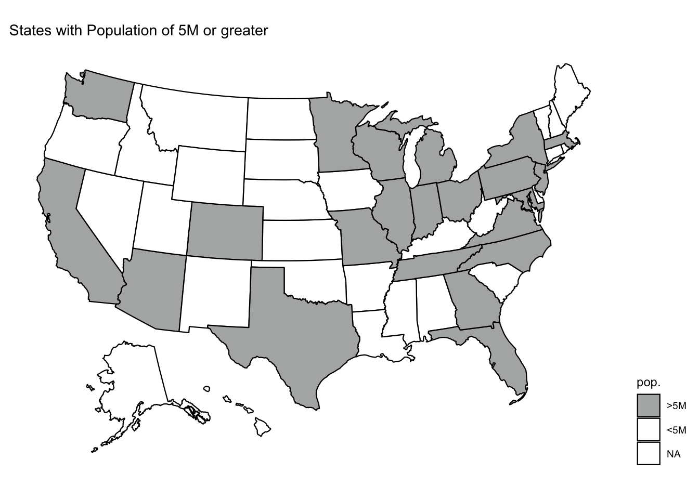
Mapping states with less than median number of breweries per capita:
plot_usmap(regions = c("states"), data = q9,
values = "belowperCapita", theme = theme_map(), labels = FALSE,
label_color = "black") +
theme(legend.position="right") +
scale_fill_manual(name = "", values=c("white","#13294B"), labels = c(">Median","<Median")) +
labs(title = 'States with lower than median Breweries per Capita')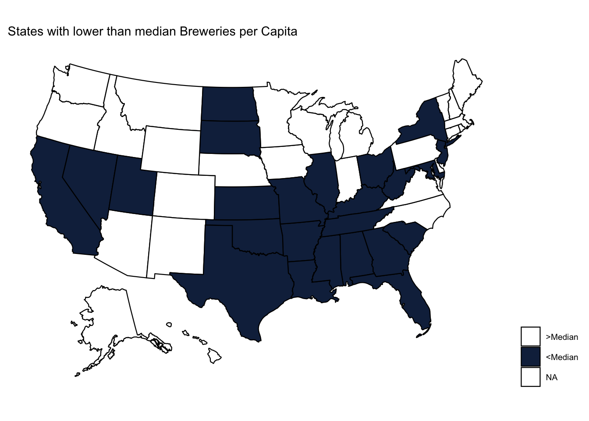
States to Target:
plot_usmap(regions = c("states"), data = q9,
values = "target", theme = theme_map(), labels = FALSE,
label_color = "black") +
theme(legend.position="right") +
scale_fill_manual(name = "", values=c("white","#C8102E")) +
labs(title = 'States to Target')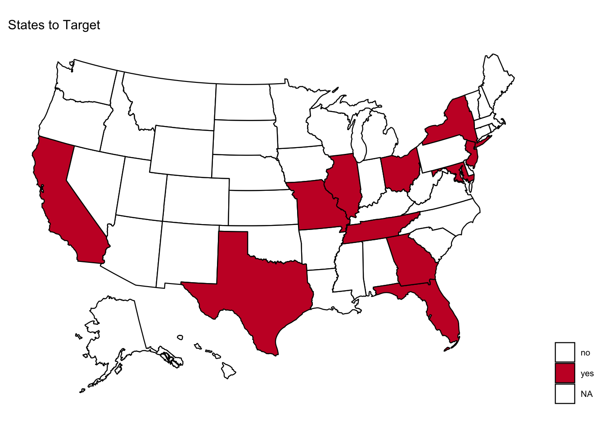
K-Means Clustering of Target States (https://uc-r.github.io/kmeans_clustering)
Data prep:
merged$ratio <- merged$IBU/merged$ABV
ia_ratio <- merged %>%
group_by(State) %>%
summarize(ia_ratio = median(ratio, na.rm=TRUE))
medianabv <- merged %>%
group_by(State) %>%
summarize(medianabv = median(ABV, na.rm=TRUE))
medianibu <- merged %>%
group_by(State) %>%
summarize(medianibu = median(IBU, na.rm=TRUE))
m1 <- merge(ia_ratio, medianabv, by="State")
m2 <- merge(m1, medianibu, by="State")
q9 <- merge(q9, m2, by="State")
nBreweries <- merged %>%
group_by(State) %>%
summarize(nBreweries = length(unique(as.character(Brewery_name))))
q9 <- merge(q9,nBreweries, by="State")
q9$nStylesPerBrewery <- q9$nStyles/q9$nBreweries
forkmeans <- q9 %>% select(medianabv, medianibu, ia_ratio, nBreweriesPerCapita)
# https://www.rdocumentation.org/packages/BBmisc/versions/1.10/topics/normalize
# library(BBmisc)
forkmeans_s <- normalize(forkmeans, method = "standardize")
row.names(forkmeans_s) <- q9$State
row.names(forkmeans) <- q9$State
forkmeans_s$target <- NA
forkmeans$target <- NA
forkmeans_s$target[which(q9$target == "yes")] = 1
forkmeans$target[which(q9$target == "yes")] = 1
forkmeans <- na.omit(forkmeans)
forkmeans_s <- na.omit(forkmeans_s)
forkmeans$target <- NULL
forkmeans_s$target <- NULLFind optimal value for “k”:
# library(factoextra)
fviz_nbclust(forkmeans_s, kmeans, method="wss", linecolor = "#13294B")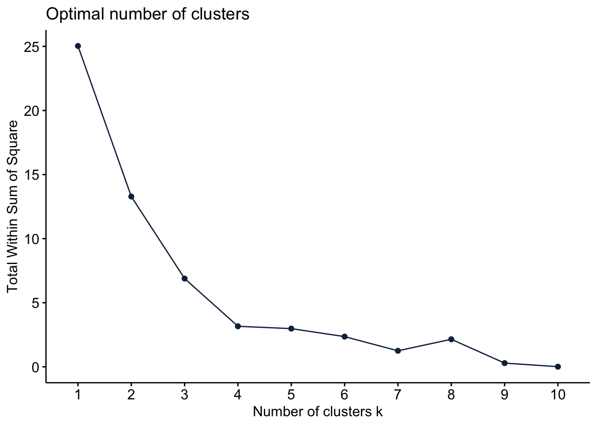
Fit model:
set.seed(10)
brewsCluster <- kmeans(forkmeans_s, 4, nstart=20)
str(brewsCluster)## List of 9
## $ cluster : Named int [1:11] 2 4 4 1 1 1 3 4 2 2 ...
## ..- attr(*, "names")= chr [1:11] "CA" "FL" "GA" "IL" ...
## $ centers : num [1:4, 1:4] 0.00722 0.46833 -2.33846 -0.01283 -0.76556 ...
## ..- attr(*, "dimnames")=List of 2
## .. ..$ : chr [1:4] "1" "2" "3" "4"
## .. ..$ : chr [1:4] "medianabv" "medianibu" "ia_ratio" "nBreweriesPerCapita"
## $ totss : num 25
## $ withinss : num [1:4] 2.148 0.208 0 0.806
## $ tot.withinss: num 3.16
## $ betweenss : num 21.9
## $ size : int [1:4] 4 3 1 3
## $ iter : int 1
## $ ifault : int 0
## - attr(*, "class")= chr "kmeans"brewsCluster$cluster## CA FL GA IL MD MO NJ NY OH TN TX
## 2 4 4 1 1 1 3 4 2 2 1cluster_container = c()
for (i in 1:length(brewsCluster$cluster))
{
cluster_container[i] <- brewsCluster$cluster[[i]]
}Visualize model output - clusters by the first two principle components:
fviz_cluster(brewsCluster, forkmeans_s, labelsize = 12,
repel=TRUE, show.clust.cent = FALSE, ellipse.alpha = 0.6) +
scale_color_manual(values = c("#C8102E", "#13294B", "darkgreen", "#b1b3b3")) +
scale_fill_manual(values = c("#C8102E", "#13294B", "darkgreen", "#b1b3b3"))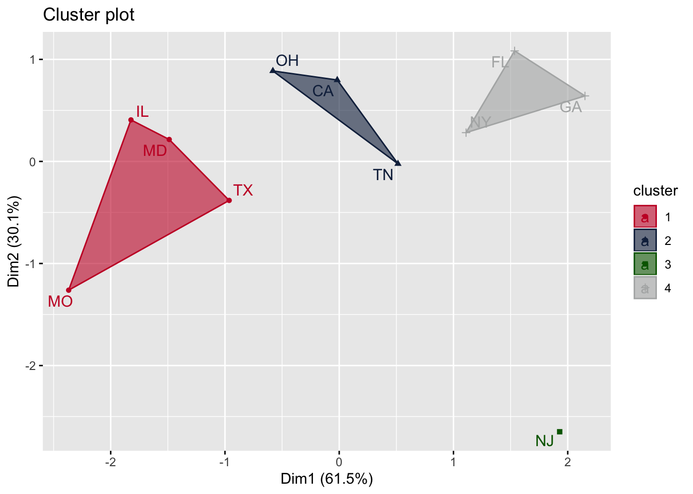
Prep data for visualization:
forkmeans_tomap <- forkmeans
forkmeans_tomap$cluster <- cluster_container
# forkmeans_tomap$fips <- statesvar
forkmeans_tomap$state <- q9$State[which(q9$target == "yes")]
forkmeans_tomap$nStylesPerCapita <- q9$nStylesPerCapita[which(q9$target == "yes")]
forkmeans_tomap$cluster <- as.factor(forkmeans_tomap$cluster)Mapping clusters:
#exclude <- q9$State[which(q9$target == "no")]
plot_usmap(regions = c("states"), data = forkmeans_tomap,
values = "cluster", theme = theme_map(), labels = FALSE,
label_color = "black") +
theme(legend.position = "right") +
guides(fill=guide_legend(title="cluster")) +
scale_fill_manual(labels = c("1", "2", "3", "4"),
values = c("#C8102E", "#13294B", "darkgreen", "#b1b3b3")) +
labs(title="K-Means Clustering of Target States")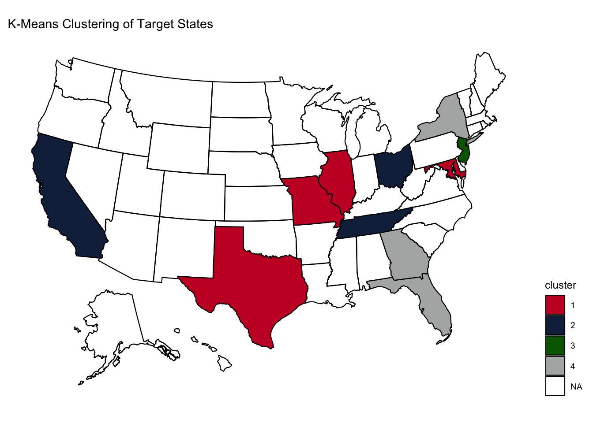
Median ABV v Median IBU:
forkmeans_tomap %>% ggplot(aes(x=medianabv, y=medianibu, col=cluster, fill = cluster, label=row.names(forkmeans_tomap))) +
geom_text(size=5) +
geom_label() +
scale_fill_manual(values = c("#C8102E", "#13294B", "darkgreen", "#b1b3b3")) +
scale_color_manual(values = c("white", "white", "white", "white")) +
labs(title = "Median ABV v Median IBU", x='median ABV', y = 'median IBU')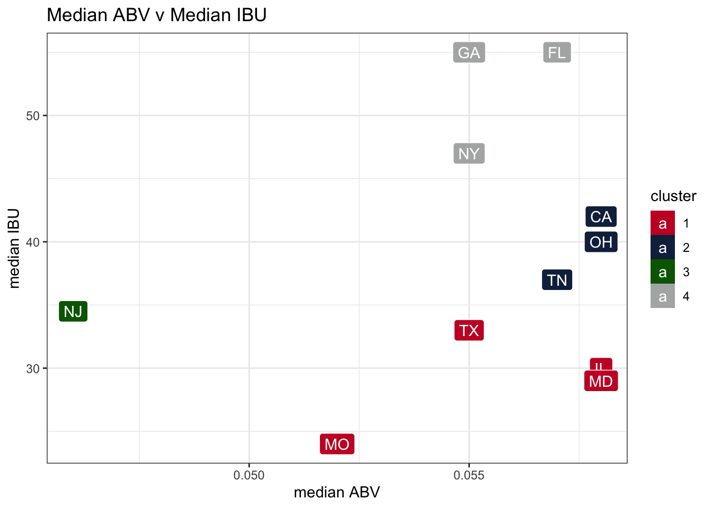
Breweries per Capita v IBU:ABV ratio:
forkmeans_tomap %>% ggplot(aes(x=nBreweriesPerCapita, y=ia_ratio,
col=cluster, fill = cluster, label=row.names(forkmeans_tomap))) +
geom_text(size=5) +
geom_label() +
scale_fill_manual(values = c("#C8102E", "#13294B", "darkgreen", "#b1b3b3")) +
scale_color_manual(values = c("white", "white", "white", "white")) +
labs(title = "Breweries per Capita v IBU:ABV ratio", x='Breweries per Capita (per 1M people)', y = 'IBU:ABV ratio')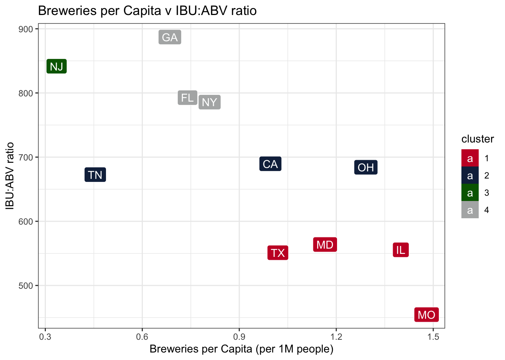
Additional maps (muted):
# plot_usmap(regions = c("states"), data = q9,
# values = "popular1st", theme = theme_map(), labels = FALSE,
# label_color = "black") +
# theme(legend.position="right") +
# scale_fill_manual(name = "Style", values=c("white","red","blue","darkgray")) +
# labs(title = 'Most Frequent Beer Style')
#
# plot_usmap(regions = c("states"), data = q9,
# values = "popular2nd", theme = theme_map(), labels = FALSE,
# label_color = "black") +
# theme(legend.position="right") +
# scale_fill_manual(name = "Style", values=c("green","white","red","blue","darkgray")) +
# labs(title = '2nd Most Frequent Beer Style')
#
# plot_usmap(regions = c("states"), data = q9,
# values = "popular3rd", theme = theme_map(), labels = FALSE,
# label_color = "black") +
# theme(legend.position="right") +
# scale_fill_manual(name = "Style", values=c("green","white","red","blue","navyblue","red3","grey","blue4","darkgray")) +
# labs(title = '3rd Most Frequent Beer Style')
#
# plot_usmap(regions = c("states"), data = q9,
# values = "P1", theme = theme_map(), labels = FALSE,
# label_color = "black") +
# theme(legend.position="right") +
# scale_fill_manual(name = "Style", values=c("green","white","red","blue","navyblue","red3","grey","blue4","seagreen1","darkgray","slateblue3","yellow2")) +
# labs(title = 'Most Frequent Beer Style')Conclusion
It is clear that the craft beer segment of the industry has taken hold across the country. There are moderate but clear differences between states in the characteristics of beers.
Examining available measurements of craft beers, we have found statistically significant differences in ABV and IBU between different classes of ales.
Looking at the number of breweries in each state, along with population, we have found eleven states that represent a potentially underserved market. Considering the beers that are currently marketed in those states, we have identified four distinct groups of states with similar tastes. Based on the characteristics of beers that are popular in those states, we believe three new labels with appropriate styles could do well in the underserved market. Here is our recommendation:
library(knitr)
library(kableExtra)
market <- c('GA,FL,NY','MO,TX,MD,IL,TN,OH,CA','NJ')
style <- c('IPA','Higher Alcohol Ale','Lower Alcohol Ale')
recommendation <- data.frame(market,style)
colnames(recommendation) <- c('Target Marget','Suggested Beer Style')
kable(recommendation,caption='Stratety for Underserved Market') %>%
kable_styling(bootstrap_options=c('striped'))| Target Marget | Suggested Beer Style |
|---|---|
| GA,FL,NY | IPA |
| MO,TX,MD,IL,TN,OH,CA | Higher Alcohol Ale |
| NJ | Lower Alcohol Ale |